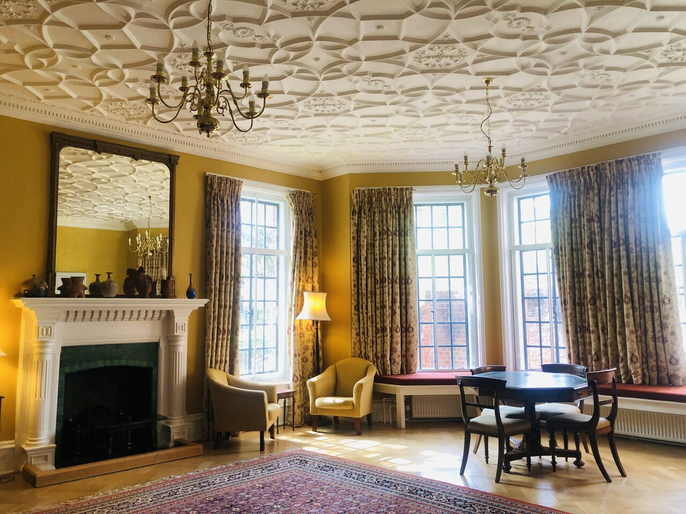
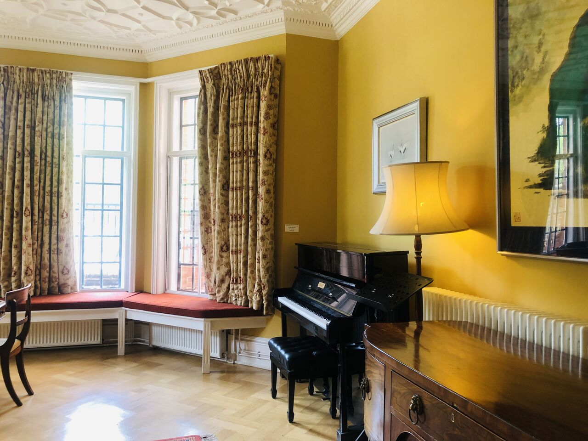

Context & Challenges
"Realising a circular space economy is a mission that transcends any single discipline. It requires a collective feedback loop between science, policy, and industry."
Building on the perspectives shared in the Oxford Expert Comment, "From frontier to feedback loop - Why space must become circular", we recognize that the path forward demands radical interdisciplinary and cross-sectoral collaboration. This workshop is organised to facilitate that very dialogue—bringing together diverse expertise to turn these conceptual frameworks into actionable orbital solutions.
Space sustainability has become a critical global concern as orbital occupancy grows at an exponential rate. As of early 2024, there are over 9,000 active satellites; however, this is projected to reach 60,000 to 100,000 by 2030. This expansion creates unprecedented challenges regarding orbital congestion and debris mitigation.

(Figures: visual concept by Yige Sun, rendered via Google Gemini AI)
Of the 1 million pieces of hazardous debris larger than 1cm, battery components account for ~8%. Abandoned batteries are active threats: they can explode due to degradation, thermal runaway, or micrometeoroid impacts. Historically, 30% to 40% of accidental fragmentation events have been linked to energy system failures.
The Battery Lifecycle Gap
Battery systems account for 10% to 20% of a spacecraft’s dry mass. With launch costs to LEO at $2,000 - $5,000/kg, abandoning these high-value components represents a massive loss of embedded energy and material investment.
Advancing Circularity and the ISAM Economy
This workshop explores moving beyond abandonment toward systems designed for reuse and repair. This shift aligns with the emerging ISAM market, projected to reach $14.3 billion by 2030. In-orbit battery replacement could extend asset life by 3 to 5 years.
A Cross-Disciplinary Dialogue
Solving the battery circularity challenge requires a complex interplay of:
Workshop Outputs
Through your Expression of Interest (EoI) and participation, we aim to co-develop:
📄 A Concept Paper
Defining strategic pathways for battery systems and design-for-serviceability protocols to enable a resilient and repairable orbital infrastructure.
⚖️ A Policy Briefing
Formulating recommendations on funding models, economic opportunities, and regulatory frameworks to catalyze the $14.3B ISAM economy and mitigate orbital risks.


The Venue: Linacre College, University of Oxford